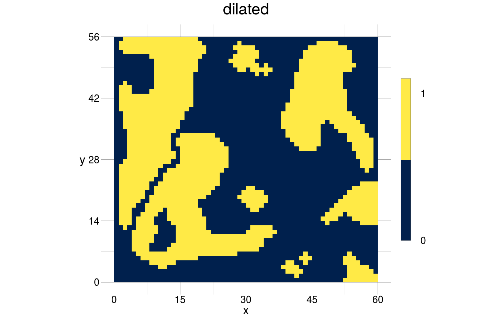
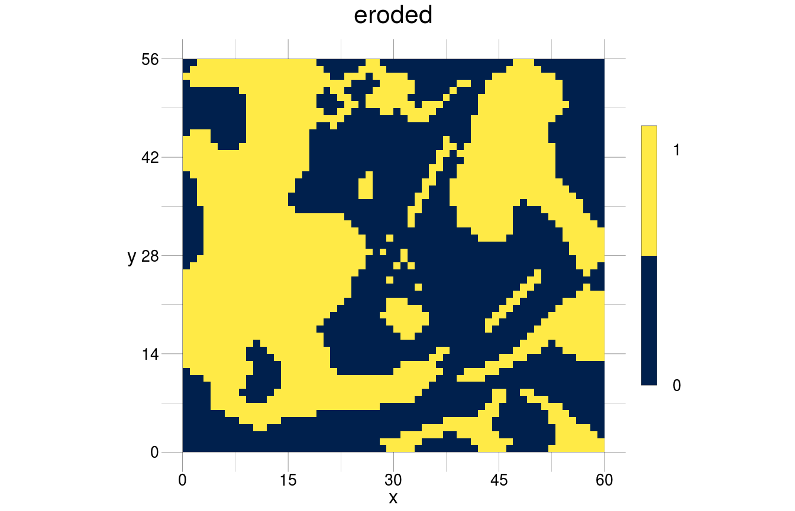

vignettes/morphological.Rmd
morphological.RmdThis document outlines basic operations that either stand on their own or may be necessary as basis for other operations. If you did not come from the page Usecases, you should go there now to read in the required objects.
The morphological operation open is an erosion, followed by a dilation. It results in a raster where cells at the boundary of patches are removed if they are exposed. Exposed means here, that they are protruding to a degree that an erosion removes them so that a dilation isn’t able to reconstruct them. The result depends on the chosen kernel, which must be the same in both operations.

The morphological operation close is a dilation, followed by an erosion. It results in a raster where cells at the boundary of patches are added if this would lead to a closed patch. In this case, the dilation would add cells that an erosion could not remove because they are now “inside” a patch. The result depends also here on the chosen kernel, which again must be the same in both operations.
Instead of using the pipeline notation, we can construct an algorithm.
closePatches <- list(list(operator = "rDilate"),
list(operator = "rErode"))
closed <- modify(input = binarised, by = closePatches, sequential = TRUE)
visualise(closed, trace = TRUE)
#> this object has the following history:
#> -> the object was loaded from memory
#> -> the values have been binarised
#> -> the raster has been morphologically dilated
#> -> the raster has been morphologically eroded